、
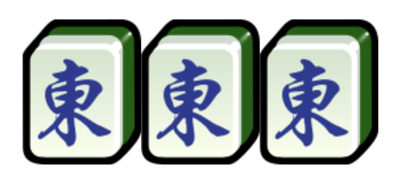
、
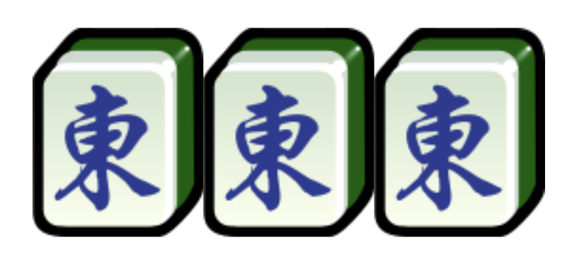
香港麻雀的食糊規則是要「三番起糊」
詳細可以去看番數。
叫牌：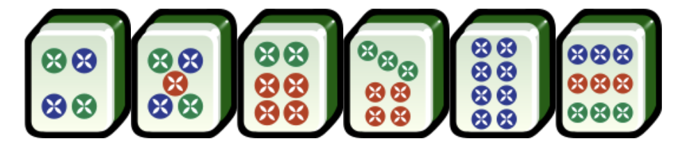

 卡窿五筒：
卡窿五筒：
| 術語 | 解釋 | 牌型 |
|---|---|---|
| 上 | 上牌的時候，只可以取上家打出的牌，與自己手中另外兩張牌形成順子。 | 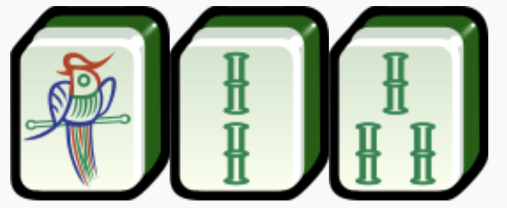、 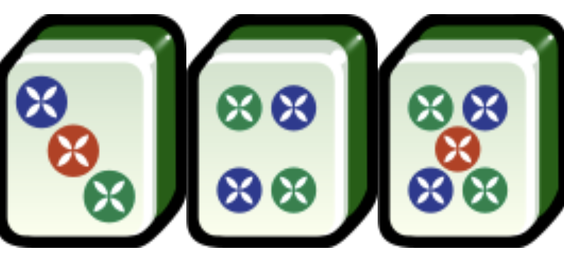、 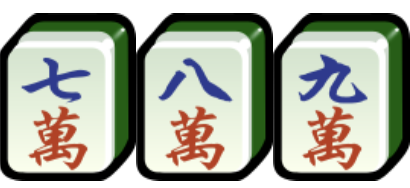 |
| 碰 | 「碰」出自「碰和牌」，指一組三張同樣的牌張。 |
、
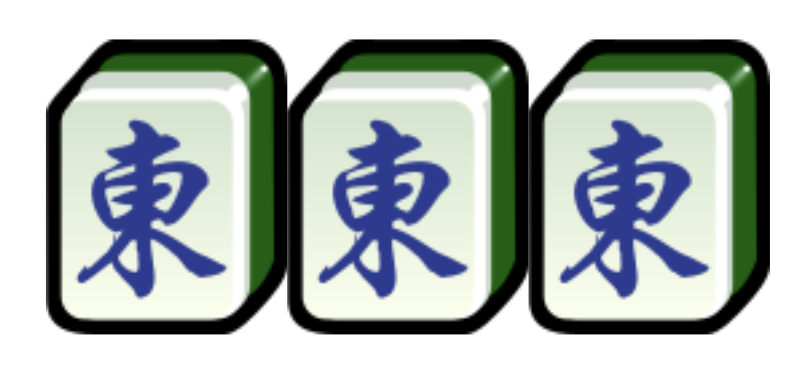
|
| 槓 | 與「碰」相似，若有同樣的四張牌，則可以「槓」。 | 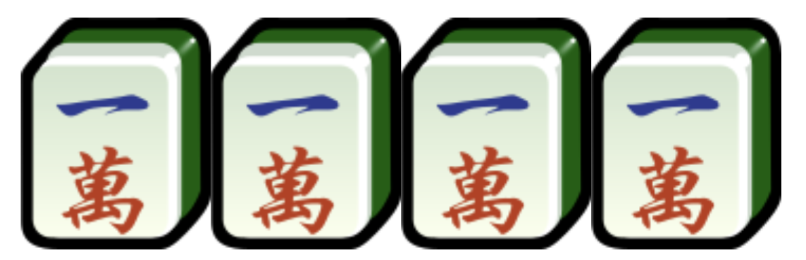、 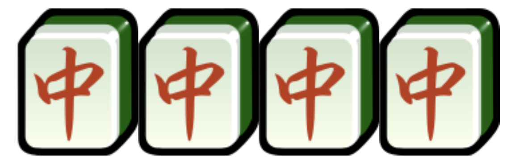 |
| 眼 | 兩張一樣的牌。在香港麻雀裏，標準的食糊牌型是「四組一對眼」。 | 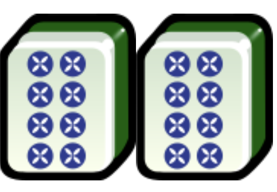、 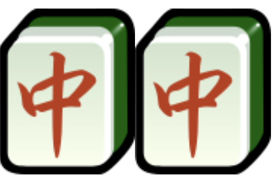、 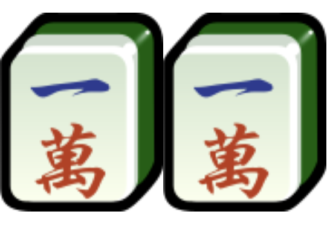 |
| 食糊 |
當香港麻雀玩家將牌湊成了一定的組合，獲得勝利，就稱為「食糊」。 香港麻雀的食糊規則是要「三番起糊」 詳細可以去看番數。 |
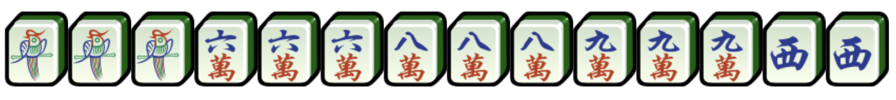、 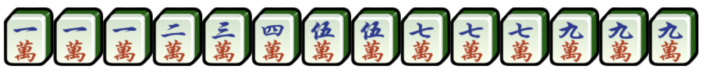 |
| 叫糊 | 指玩家只差一隻牌即可「食糊」。 |
有牌：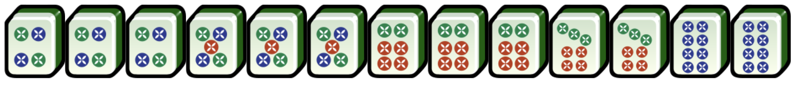 叫牌：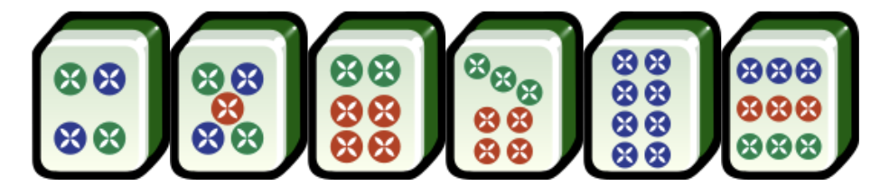 |
| 自摸 | 指玩家「食糊」的那一隻牌，是自己摸回來的。 | |
| 出銃 | 玩家出的一隻牌，讓另一玩家「食糊」，即是「出銃」。 | |
| 生章 | 只是在檯上未被打出或被打出一隻的牌。 | |
| 熟章 | 已經在檯上被打出兩隻或三隻的牌。 | |
| 絕章 | 已經在檯上被打出四隻的牌。 | |
| 卡窿 | 「上牌」中的中間一隻牌。 |
有牌：
卡窿五筒：
|
| 偏章 | 「上牌」的一、二、八、九牌。因為只能與三、七牌形成「上」。 |